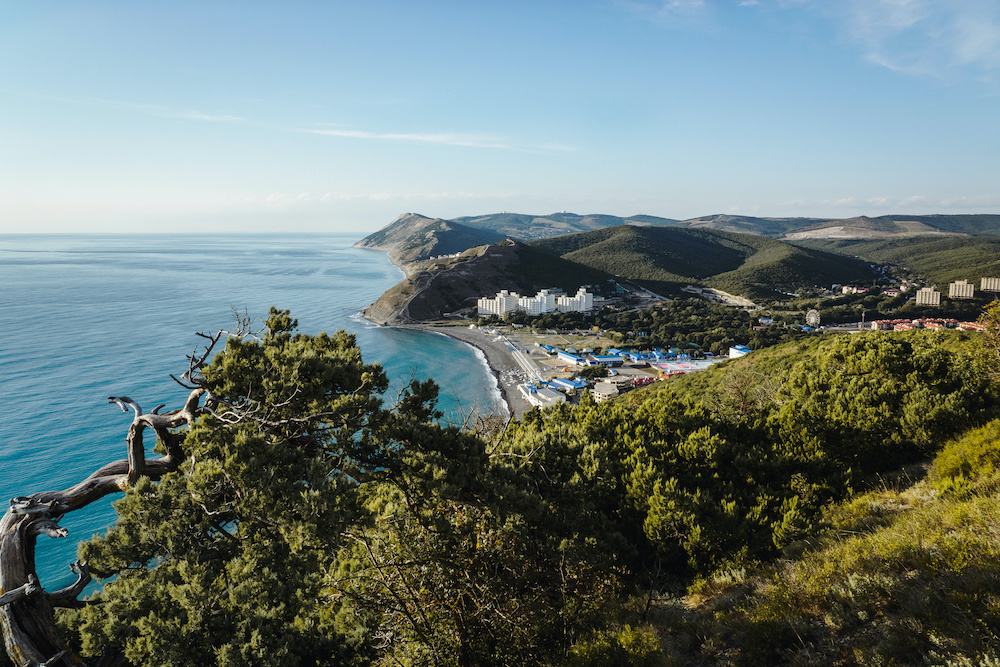
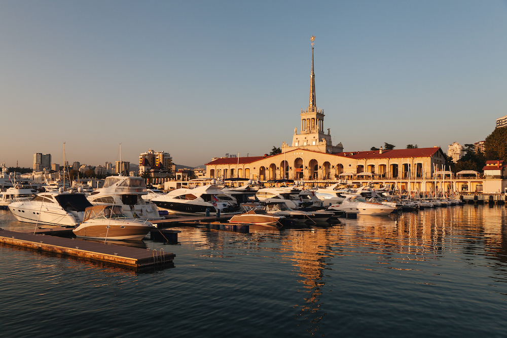

Южные направления
Анапа
Анапа считается едва ли не лучшим городом для виндсёрфинга и кайтбординга в нашей стране. Хороший ветер можно поймать на Бугазской косе и в водах Кизилташского лимана. Любители дайвинга приезжают в посёлок Витязево, где удаётся не только полюбоваться морским дном, но и взглянуть на затонувшие корабли и самолёты времён Второй мировой войны. В замке «Львиная голова» проводят рыцарские турниры и мастер-классы по средневековым ремёслам — гончарному и кузнечному делу, а также стрельбе из лука. А ещё здесь стоит посетить уютные винодельни и, конечно, искупаться в море. Самые популярные пляжи — Центральный и Высокий Берег, а на Пионерском проспекте отдыхает много детей из лагерей и санаториев.
Сочи
Самый популярный пляж — Имеретинский, протяжённостью 4 км. Здесь есть удобные кабинки для переодевания, а среди гальки встречаются платные зоны с белым песком. Не уступает ему в комфорте и «Ривьера», расположенный рядом с уютным зелёным сквером. Когда загорать наскучит, отправляйтесь пощекотать нервы в Skypark, где можно прыгнуть с самой высокой в России банджи-площадки, пройти по самому длинному подвесному пешеходному мосту в стране или пролететь над Ахштырским ущельем на Zipline. За яркими балийскими пейзажами приезжайте на Мацестинские чайные плантации. Любителям спорта стоит заглянуть в Олимпийский парк, где можно не только полюбоваться на наследие знаменитых соревнований, но и прокатиться по трассе «Формулы-1» или поиграть в кёрлинг в «Ледяном Кубе».